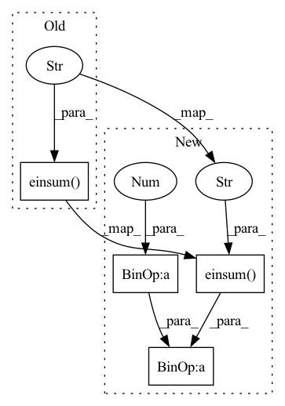

Pattern ID :2763

Before Change
sk = k_r.sum(dim=2)
sk = F.pad(sk, (0, 0, 1, 0))
R = torch.einsum("bie,bje->bij", sq, sk)
return mask_reordering_matrix(R)
class SinkhornCausalAttention(nn.Module):
def __init__(self, bucket_size, dim, dim_heads, heads, max_seq_len, dropout = 0., kv_bucket_size = None, use_simple_sort_net = False):
After Change
sk = k_r.sum(dim=2)
sk = F.pad(sk, (0, 0, 1, 0))
R = torch.einsum("bie,bje->bij", sq, sk) * (dim ** -0.5)
return mask_reordering_matrix(R)
class SinkhornCausalAttention(nn.Module):
In pattern: SUPERPATTERN
Frequency: 4
Non-data size: 4
Instances
Fragment ID: 9119515
Project Name: lucidrains/sinkhorn-transformer
Commit Name: cd3ec383542d9f145e259f8b5976cc555ee301b9
Time: 2020-04-18
Author: lucidrains@gmail.com
File Name: sinkhorn_transformer/sinkhorn_transformer.py
M Class Name: CausalAttentionSortNet
N Class Name: CausalAttentionSortNet
M Method Name: forward(3)
N Method Name: forward(3)
M Parent Class: nn.Module
N Parent Class: nn.Module
M File Name: sinkhorn_transformer/sinkhorn_transformer.py
N File Name: sinkhorn_transformer/sinkhorn_transformer.py
M Start Line: 515
M End Line: 519
N Start Line: 515
N End Line: 519
'>
Before Change
// attention
dots = torch.einsum("bhnd,bhkd->bhnk", queries, keys)
attn = dots.softmax(dim=-1)
attn = torch.einsum("bhnk,bhkd->bhnd", attn, values)
// split heads
After Change
// attention
dots = torch.einsum("bhnd,bhkd->bhnk", queries, keys) * (d_h ** -0.5)
attn = dots.softmax(dim=-1)
attn = self.dropout(attn)
attn = torch.einsum("bhnk,bhkd->bhnd", attn, values)
'>
Fragment ID: 9119518
Project Name: lucidrains/linformer
Commit Name: 1b63f2b16f24d39d6fd79ceb1de4c0b506845ac9
Time: 2020-06-28
Author: lucidrains@gmail.com
File Name: linformer/linformer.py
M Class Name: LinformerSelfAttention
N Class Name: LinformerSelfAttention
M Method Name: forward(3)
N Method Name: forward(3)
M Parent Class: nn.Module
N Parent Class: nn.Module
M File Name: linformer/linformer.py
N File Name: linformer/linformer.py
M Start Line: 66
M End Line: 84
N Start Line: 79
N End Line: 99
'>
Before Change
q = qk[:, 0:query_len]
qk = F.normalize(qk, 2, dim=-1).type(q.type())
dot = torch.einsum("bie,bje->bij", q, qk)
// qk attention requires tokens not attend to self
i = torch.arange(t)
dot[:, i, i] = TOKEN_SELF_ATTN_VALUE
After Change
q = qk[:, 0:query_len]
qk = F.normalize(qk, 2, dim=-1).type(q.type())
dot = torch.einsum("bie,bje->bij", q, qk) * (dim ** -0.5)
// qk attention requires tokens not attend to self
i = torch.arange(t)
'>
Fragment ID: 9119517
Project Name: lucidrains/reformer-pytorch
Commit Name: 3becb66fc141a7204f58981c41eeabcd0bd85fab
Time: 2020-02-04
Author: lucidrains@gmail.com
File Name: reformer_pytorch/reformer_pytorch.py
M Class Name: FullQKAttention
N Class Name: FullQKAttention
M Method Name: forward(4)
N Method Name: forward(4)
M Parent Class: nn.Module
N Parent Class: nn.Module
M File Name: reformer_pytorch/reformer_pytorch.py
N File Name: reformer_pytorch/reformer_pytorch.py
M Start Line: 346
M End Line: 352
N Start Line: 346
N End Line: 353
'>
Before Change
bq_t = b_t
bq_k = look_around(b_t, **look_around_kwargs)
dots = torch.einsum("bhie,bhje->bhij", bq, bk)
mask_value = max_neg_value(dots)
if causal:
mask = bq_t[:, :, :, None] < bq_k[:, :, None, :]
After Change
bq_t = b_t
bq_k = look_around(b_t, **look_around_kwargs)
dots = torch.einsum("bhie,bhje->bhij", bq, bk) * (e ** -0.5)
mask_value = max_neg_value(dots)
if causal:
'>
Fragment ID: 9119516
Project Name: lucidrains/sinkhorn-transformer
Commit Name: cd3ec383542d9f145e259f8b5976cc555ee301b9
Time: 2020-04-18
Author: lucidrains@gmail.com
File Name: sinkhorn_transformer/sinkhorn_transformer.py
M Class Name: LocalAttention
N Class Name: LocalAttention
M Method Name: forward(6)
N Method Name: forward(6)
M Parent Class: nn.Module
N Parent Class: nn.Module
M File Name: sinkhorn_transformer/sinkhorn_transformer.py
N File Name: sinkhorn_transformer/sinkhorn_transformer.py
M Start Line: 263
M End Line: 269
N Start Line: 263
N End Line: 269